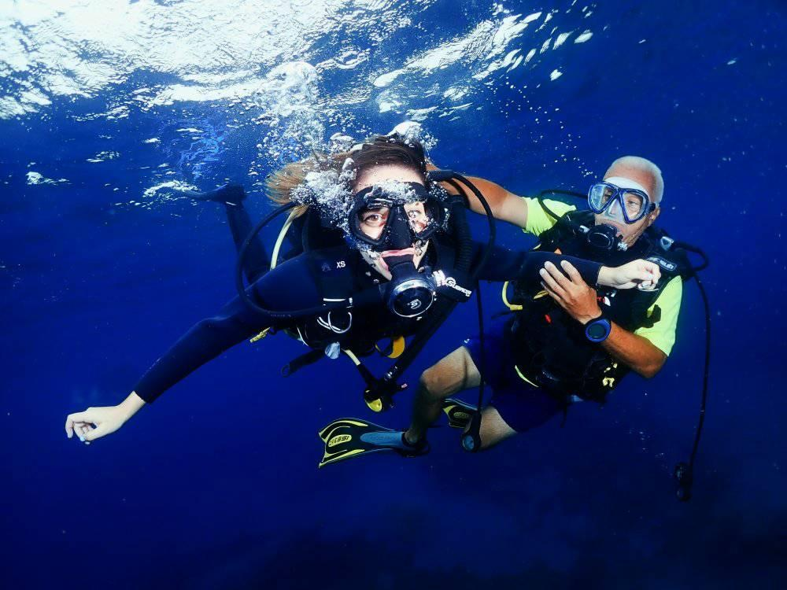
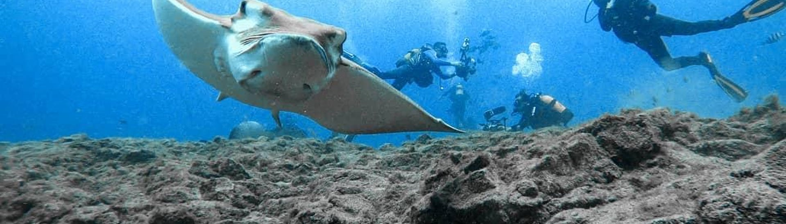
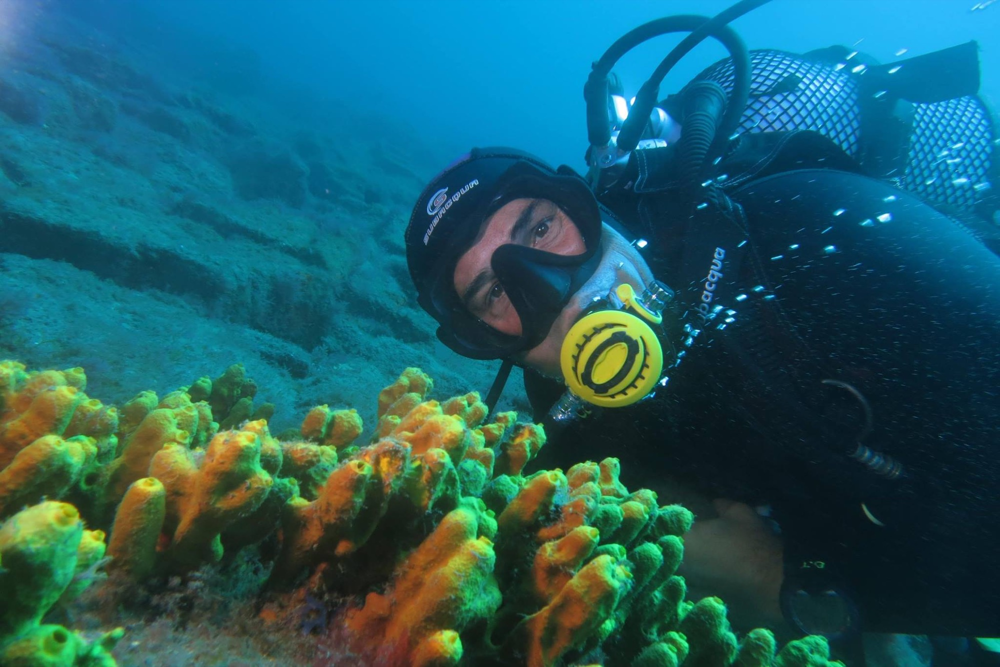
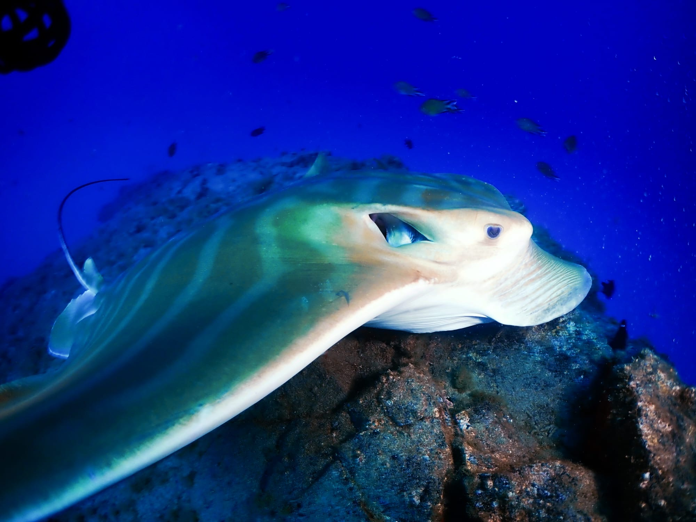
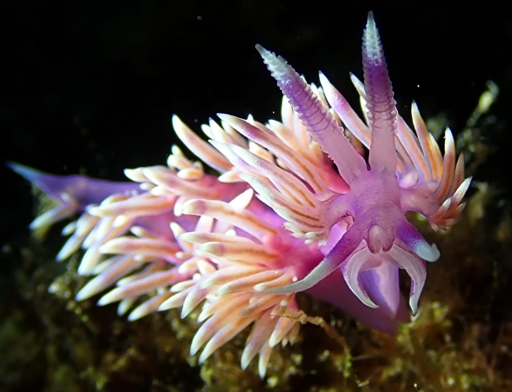
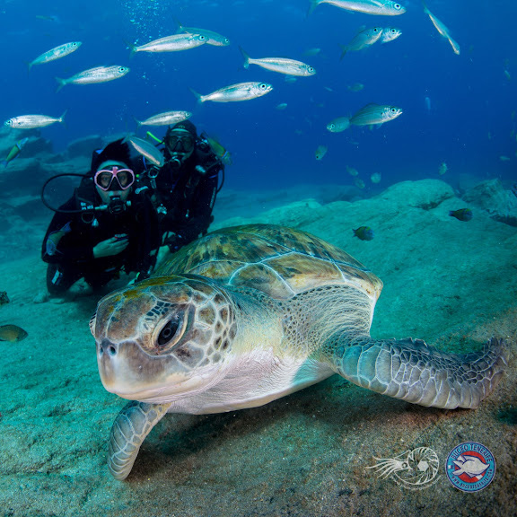
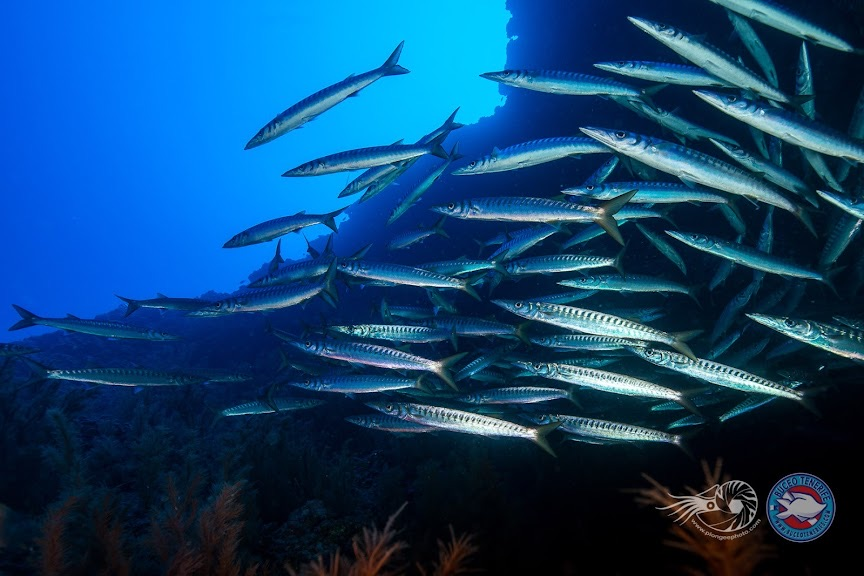

Tu primera respiración bajo el agua, o la número mil
El bautismo tiene precio cerrado. Los cursos dependen de la agencia y de las fechas: te los confirmamos al momento por WhatsApp.

Bautismo desde barco
Una clase breve en tierra (oídos, regulador, señales y seguridad) y salimos en barco a una plataforma de 2–4 m. Tu instructor controla tu equipo y te guía hasta un máximo de 12 m.
Puntos
Montaña Amarilla, Roncadores del Faro o Maravilla
Prof. máx.
12 m
Bajo el agua
Sin límite: lo que dure tu botella
Salidas
09:00 o 12:00
Reserva
20 € por Bizum o transferencia; el resto, en el centro
El curso con el que te haces buceador. Teoría en 5 módulos, ejercicios en aguas confinadas (piscina o playa) y 4 inmersiones desde barco, siempre con instructor.
Duración
4 días, de 9:00 a 15:30 aprox.
Truco
Adelanta la teoría en casa y ganas un día de vacaciones
Baja más y disfruta el doble. Navegación y profunda obligatorias, y tres inmersiones a elegir entre pecio, multinivel y deriva. Pregunta por el pack Advanced + Nitrox.
Salidas diarias en barco a los puntos del sur. Llevamos tus botellas hasta el barco, cargamos nitrox con nuestra propia membrana y elegimos el punto según tu nivel y el mar del día.
Precio del bautismo publicado en diveintenerife.com. Para instructores: curso de formación de instructores WASE (ITP), consúltanos.
02Puntos de buceo
Diez inmersiones a minutos del puerto
Profundidad, corriente y nivel de cada punto, tal como los describen Gonzalo y Carlos. El punto del día se decide con el mar.
Profundidad
0 m10 m20 m30 m40 m
Maravilla12+ m
Corriente: NulaNivel: Bautismo · Open Water
La cala de referencia para los bautismos… y donde más caballitos de mar hemos visto. Perfecta para el último día: estiras la botella al máximo.
Montaña Amarilla18+ m
Corriente: BajaNivel: Open Water · Advanced
La reina de las formaciones volcánicas: de su duna fósil a La Puerta, una montaña derrumbada. Resguardada del viento y la corriente, es el punto que nunca falla.
Los Chuchos8–21 m
Corriente: MediaNivel: Open Water
«La ciudad de las rayas», la inmersión estrella del sur de Tenerife. Buceas entre rayas y junto a un barco hundido.
Cueva del Tiburón18+ m
Corriente: Media/altaNivel: Open Water · Advanced
Agua clarísima y tanta vida que parece un acuario en mitad del mar. Si el mar lo permite, de los mejores sitios para un bautismo.
Arco de Coral18+ m
Corriente: Media/altaNivel: Open Water · Advanced
A pocos minutos en barco: el basalto forma arcos que piden foto.
El Palmar25+ m
Corriente: Media/altaNivel: Open Water · Advanced
Junto a Los Cristianos. Su cueva es de los pocos puntos donde ver tortugas es casi seguro.
Para buceadores con experiencia: callejones, bancos de barracudas, chuchos, medregales y coral. Si vas con Carlos (Huesi), te presenta al morión que vive a 32 metros desde hace más de 20 años.
Basalto y coral negro. Imperdible si buceas en el sur de Tenerife.

Los Chuchos, «la ciudad de las rayas» · foto de su web
03Reserva directa
Sin intermediarios, de tú a tú
Hablas con quien te guía
Gonzalo y Carlos son los dueños y bajan contigo. Les cuentas tu nivel, tus dudas o tus nervios antes de mojarte.
Reserva con 20 €
Nos dices día y hora, pagas la señal por Bizum o transferencia y el resto lo abonas en el centro.
Si el mar no acompaña, buscamos plan
Conocemos cada cala del sur: si un punto no está bien, buceamos en otro o cambiamos de día.
04Reseñas
Lo que cuentan al subir al barco
9,3/10
★★★★★★★★★★20 opiniones verificadas en Yumping
Yumping9,3 / 10 · 20 opiniones
Bautismo en Yumping5,0 / 5 · 14 opiniones
★★★★★Durante la actividad tuvimos con cada una de nosotras un instructor, por lo que la atención y la experiencia fue plena.
★★★★★¡Una maravilla! Gente super amable, atentos, profesionales. Hemos disfrutado desde el minuto 1. Repetiremos sin dudarlo.
★★★★★No pude realizar del todo la actividad por problemas con los oídos, pero los instructores, ¡los mejores! Me dieron muchos trucos y ayudas para volver a intentarlo.
★★★★★El equipo es encantador, súper buenas personas y con muchísima paciencia para explicarlo todo y acompañarte en cada momento.
★★★★★Gente muy profesional y muy atenta, me han facilitado todo el tema del curso desde el primer día que contacté con ellos.
★★★★★Hemos realizado el curso Open Water Diver con ellos y hemos quedado encantados con la atención de todos los monitores y guías, en especial de Carlos y Óscar.
★★★★★Cuidadosos, esmerados, profesionales y metódicos. Una actividad la del bautismo de buceo cuidada y muy correcta.
★★★★★Los instructores fueron muy profesionales y cercanos. La zona de buceo de Montaña Amarilla nos sorprendió por su gran cantidad de peces.
05Cómo funciona
Escríbenos
Por WhatsApp: qué quieres hacer, cuántos sois y qué día os va bien.
Te confirmamos
Hora de salida (09:00 o 12:00) y señal de 20 € por Bizum o transferencia.
Al agua
Vienes al centro, te equipamos y salimos en barco desde el puerto.
06El centro
Gonzalo y Carlos, al frente desde el primer día
Cada día nos vamos al agua con la misma ilusión y ganas que el primer día.Gonzalo y Carlos, en su web
G
GonzaloFundador · instructor · copropietario
C
Carlos «Huesi»Instructor · copropietario
Llevan 30 años formando buceadores en el sur de Tenerife y presumen de ser los instructores-guías más antiguos de la zona. Son los propios dueños quienes guían a sus clientes en todas las inmersiones.

Bajo el agua con Buceo Tenerife · foto de su web
Lo que encuentras en el centro
Centro ITF WASEde formación de instructores
2 embarcacionesde 150 y 250 HP, en el puerto deportivo
Compresores propiosy membrana de nitrox
Botellas al barcolas llevamos nosotros: tú no cargas peso
Vestuarioducha caliente, lavabo y taquillas
Tu equipoendulzado y guardería de equipos
Cuida el mar, es el único que tenemos.
07Lo que vive aquí




Rayas, tortugas, barracudas, nudibranquios y caballitos de mar. Fotos de la web del centro.
08Preguntas frecuentes
¿Necesito experiencia para el bautismo?
No. Primero una clase breve en tierra: cómo compensar los oídos, respirar con el regulador, señales y normas de seguridad. Después salimos en barco y tu instructor te acompaña en todo momento.
¿Cuánto tiempo estaré bajo el agua?
No te limitamos el tiempo: si estás a gusto, te quedas lo que dure tu botella, que depende de tu forma de respirar.
¿Qué tengo que llevar?
Bañador y toalla. En el centro hay ducha de agua caliente, lavabo y taquillas. El resto te lo confirmamos por WhatsApp.
¿Y si me cuesta compensar los oídos?
Cada bautismo lleva su instructor y va a tu ritmo. Si un día no sale, te damos trucos para volver a intentarlo.
¿Y si hace mal tiempo?
Elegimos cada día el punto más resguardado. Si no es seguro bucear, te proponemos otra fecha.
¿Pueden venir niños?
Depende de la edad y de la actividad. Escríbenos y te decimos qué opciones hay.
¿Puedo volar después de bucear?
Espera 24 horas desde la última inmersión antes de volar o subir en altura, también al Teide.
09Cómo llegar
C/ María del Carmen García, 22 · 38631 Las Galletas (Arona), Tenerife
Frente a la iglesia de Las Galletas. Los barcos salen del puerto deportivo.